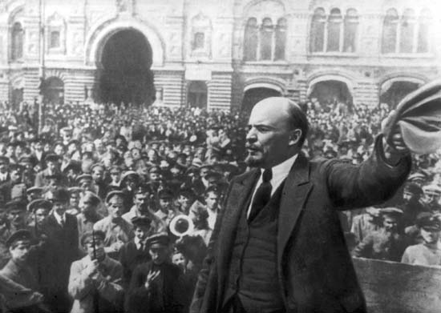
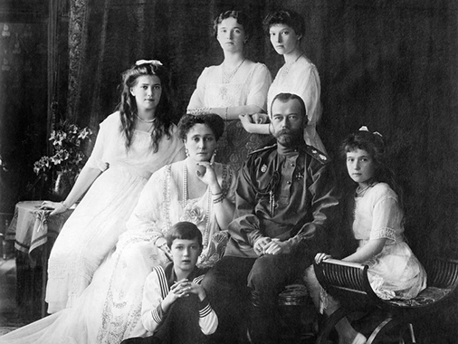
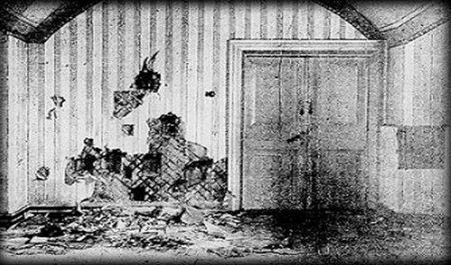

A Russian Revolution

In 1917 the relationship between the people and the Russian Tsar started to crumble. After World War I and some poor descisions made by the Russian leaders the people felt like they were treated badly with the lack of food, appreciation, and loss of men. During this time the Royal family had many stuggle, but began to bargain and try to find a way to calm the crowds.
Resource
Abdicating the Throne

With the Revoltuion going on with full strength Nicholas II began to get nervous. In March 1917 after two more wars since the begining of the revolution he stepped down from the throne by force from the socialist party. Since abdicatin the throne his family was forced to move to the Czarskoye Selo Palace for safe keeping.
Resource
A Civil War

As the socialist became more powerful they also became more paranoid. In 1918 they moved the royal family again to Yekaterinburg. With the civil war making a turn to end and anti-Bolshevik forces rising they began to get nervous the the Tsar and his family would be freed and given power again.On July 17th, 1918 the socialist killed all of the royal family in one of the basement rooms as well as any servants that were brought with them.
Resource
A Story of Hope
On February 6th, 1928 In New York City a girl showed up who claimed to be Anastasia Tschaikovsky. She claimed that she came to America for doctors care. After a press conference a man named Gleb Botkin claimed that he played with the duchess as a child and knew that this was true, that she was alive.
As time went on she was eventually found out to be Anna Anderson. She was found in Europe as a suicidal patient with no memory. This began a long legal battle for finding out if Anna Anderson was actually Anastasia.
Resource
Timeline
- The Russian Revolution Begins - January 22, 1905
- End of the First Revolution - October 30, 1905
- Russia enters WWI - August 14, 1914
- Second Russian Revolution Begins - February 23, 1917
- Nicholas II Forced to Abdicate the Throne - March 2, 1917
- Russian Civil War Begins - November 7, 1917
- Bolsheviks Take Control - November 8, 1917
- The Romanovs are Killed - July 17, 1918
- Russian Civil War Ends - March 21, 1921
- Anna Anderson Shows up in New Work - February 6, 1928